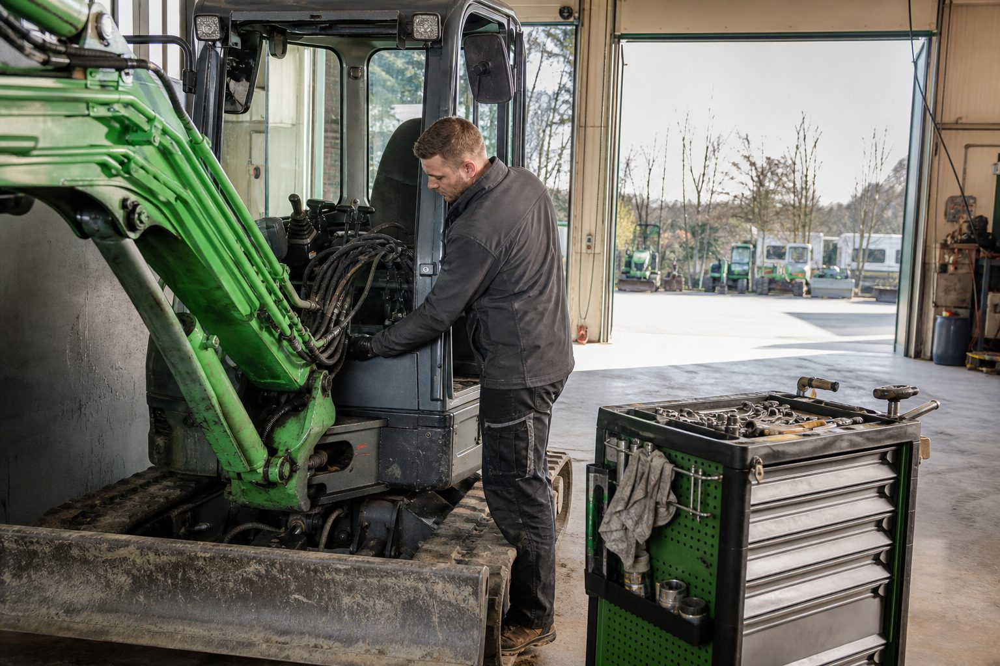

Saisonstart: Der Maschinen-Check vor dem ersten Einsatz – und welche Prüfungen Pflicht sind
Im März geht es los, und was im Winter nicht gewartet wurde, fällt im April aus. Eine Checkliste für Bagger, Fahrzeuge, Anhänger, Geräte und Ausrüstung – mit den Prüffristen, die die Berufsgenossenschaft verlangt.

- Betriebssicherheitsverordnung § 14: Prüfung durch befähigte Personen nach Fristen aus der Gefährdungsbeurteilung – Fahrzeuge und Erdbaumaschinen jährlich, elektrische Geräte auf Baustellen alle drei Monate, Leitern und Zurrgurte jährlich.
- Checkliste: Hydraulik, Beleuchtung, Bremsen und Ladungssicherung, Akkus, Schutzausrüstung mit Ablaufdatum, Verbandkasten nach DIN 13157.
- Prüfungen gehören in die Schlechtwetterzeit – im März haben Werkstätten und Sachkundige keine Zeit.
Die erste Baustellenwoche im März ist die Woche mit den meisten Ausfällen des Jahres: Der Rüttler springt nicht an, die Hydraulik am Minibagger tropft, der Anhänger hat ein Licht weniger als im November, die Akkus der Heckenschere sind tief entladen. Nichts davon ist ein Defekt. Es ist fehlende Wartung – und in einigen Fällen eine fehlende Prüfung, die die Berufsgenossenschaft nach dem nächsten Unfall zuerst abfragt.
Was vorgeschrieben ist
Die Betriebssicherheitsverordnung verlangt, dass Arbeitsmittel, deren Sicherheit von den Montagebedingungen oder von Verschleiß abhängt, regelmäßig von einer zur Prüfung befähigten Person geprüft werden. Die Fristen legt der Betrieb in der Gefährdungsbeurteilung fest; die Unfallversicherer geben Richtwerte, die in der Praxis als Standard gelten.
| Arbeitsmittel | Prüfung | Richtwert |
|---|---|---|
| Fahrzeuge und Anhänger | Sachkundiger nach DGUV Vorschrift 70 | jährlich, zusätzlich Hauptuntersuchung |
| Erdbaumaschinen (Bagger, Radlader) | Sachkundiger | jährlich |
| Ortsveränderliche elektrische Geräte | Elektrofachkraft, DGUV Vorschrift 3 | auf Baustellen alle drei Monate |
| Leitern und Tritte | befähigte Person | jährlich |
| Zurrgurte, Anschlagmittel | Sachkundiger | jährlich |
| Feuerlöscher | Fachbetrieb | alle zwei Jahre |
| Erste-Hilfe-Material | Ersthelfer/Betrieb | Verfallsdaten, nach jedem Gebrauch |
Jede Prüfung wird dokumentiert – Prüfplakette am Gerät, Prüfbuch oder digitale Liste im Betrieb. Fehlt die Dokumentation, gilt die Prüfung als nicht erfolgt.
Die Checkliste für den Hof
Bagger und Radlader. Hydraulikschläuche auf Risse und Scheuerstellen, Ölstände, Schnellwechsler mit Sicherung, Ketten und Spannung, Beleuchtung und Warneinrichtungen, Rückfahrwarner, Schutzaufbau. Die Bedienungsanleitung gehört in die Kabine, die Beauftragung des Fahrers in die Akte.
Fahrzeuge und Anhänger. Beleuchtung, Reifen und Profil, Bremsen am Anhänger, Auflaufeinrichtung, Stützrad, Zugkugel, Kennzeichen, Warndreieck, Warnwesten, Verbandkasten mit Datum. Ladungssicherung: Zurrgurte ohne Einschnitte, Antirutschmatten, Netze. Die Zulassungspapiere des Anhängers – und die Frage, welcher Fahrer welches Gespann fahren darf.
Handgeführte Maschinen. Rüttelplatten, Stampfer, Trennschleifer, Motorsägen, Freischneider: Kraftstoff, Filter, Kerzen, Schneidwerkzeuge, Schutzeinrichtungen, Vibrationsdämpfung. Bei Akkugeräten: Ladezustand, Zellzustand, Lagerung im Winter bei mittlerer Ladung – tief entladene Akkus sind im Frühjahr oft nicht mehr zu retten.
Persönliche Schutzausrüstung. Helme haben ein Ablaufdatum, meist vier bis fünf Jahre nach Herstellung. Schnittschutzhosen mit Schnittspuren sind Abfall. Sicherheitsschuhe mit durchgelaufener Sohle auch. Gehörschutz, Schutzbrillen, Handschuhe in der richtigen Größe für jeden.
Erste Hilfe. Verbandkasten nach DIN 13157 pro Fahrzeug, Verfallsdaten der sterilen Komponenten prüfen, Ersthelfer im Betrieb benannt und in den letzten zwei Jahren aufgefrischt.
Der Zeitpunkt
Die Winterprüfung ist keine Frage des Kalenders, sondern der Kapazität: Im Januar und Februar haben Werkstätten und Sachkundige Zeit, im März nicht. Betriebe, die ihre Prüfungen in die Schlechtwetterzeit legen, beschäftigen ihre Leute mit sinnvoller Arbeit und beginnen die Saison mit einem Fuhrpark, der läuft. Und sie haben für die Berufsgenossenschaft eine Liste – nicht eine Erklärung.
Quellen
- Betriebssicherheitsverordnung, § 14 Prüfung von Arbeitsmitteln (Prüfung durch zur Prüfung befähigte Personen, Fristen nach Gefährdungsbeurteilung) – www.gesetze-im-internet.de/betrsichv_2015/__14.html
- DGUV Vorschrift 70: Fahrzeuge, § 57 Prüfung (mindestens einmal jährlich durch einen Sachkundigen) – publikationen.dguv.de/regelwerk/dguv-vorschriften/
- DGUV Vorschrift 3: Elektrische Anlagen und Betriebsmittel (Prüffristen für ortsveränderliche Betriebsmittel) – publikationen.dguv.de/regelwerk/dguv-vorschriften/
Kommentare
Noch keine Kommentare. Schreiben Sie den ersten.

Darf ein Auszubildender den Minibagger fahren?
Ja, aber nicht allein: Unter 18 Jahren darf ein Azubi Erdbaumaschinen nur unter Aufsicht einer fachkundigen Person führen, wenn das Ausbildungsziel es erfordert. Selbstständig fahren darf er ab 18 – nach Qualifizierung, Unterweisung und schriftlicher Beauftragung durch den Betrieb.

Wacker Neuson EZ17e: Der Elektro-Minibagger, der einen Arbeitstag ohne Steckdose schafft
1,7-Tonnen-Klasse, 23,4 Kilowattstunden Akku, Zero Tail: Der EZ17e ist die Maschine, mit der viele Betriebe zum ersten Mal elektrisch baggern. Was er kann, was er kostet und wo er an Grenzen stößt.

Motorsäge: Welche Ausbildung Mitarbeiter brauchen – die Module der DGUV Information 214-059
Ohne nachgewiesene Ausbildung darf im Betrieb niemand die Kettensäge anwerfen. Was Modul A und Modul B vermitteln, wer sie braucht und was neben dem Schein zur Pflicht gehört.